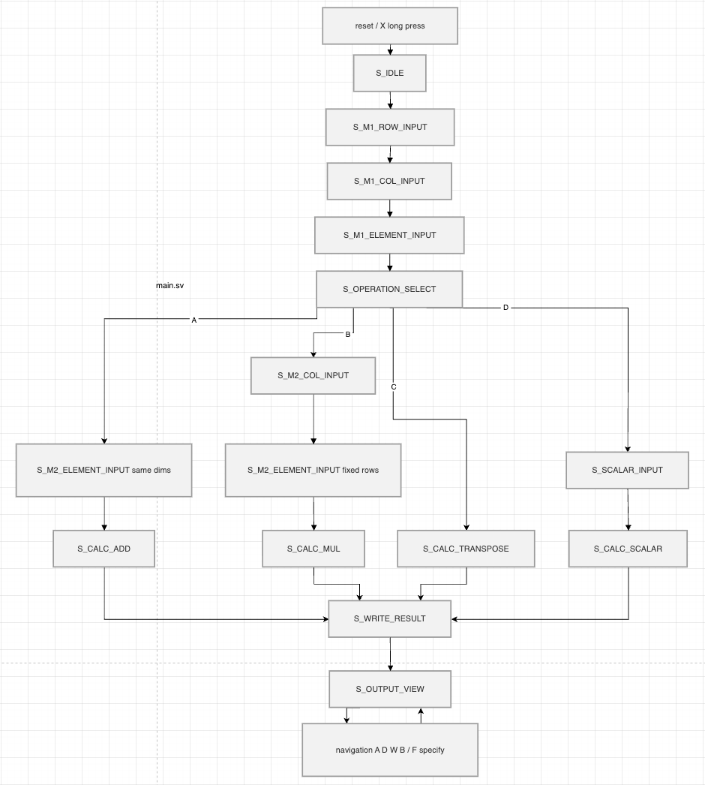
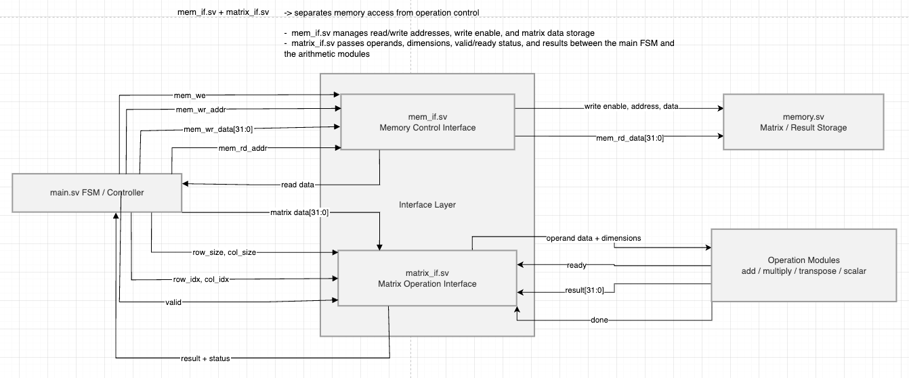
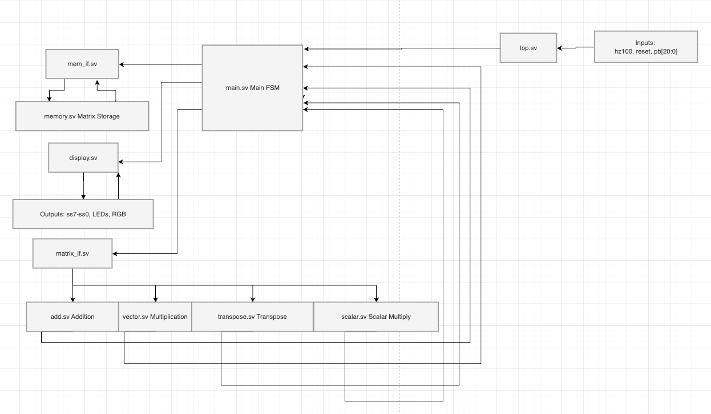
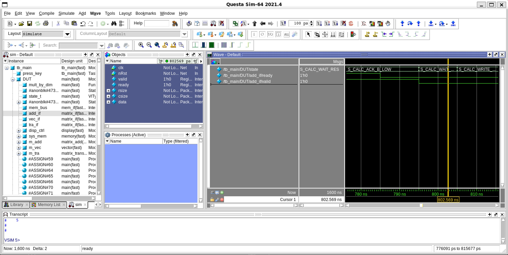
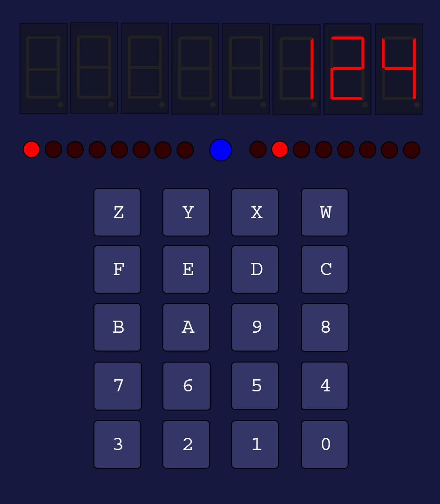

A matrix coprocessor on an FPGA
Matrix arithmetic is slow in software and is the reason GPUs and TPUs exist. This is the small version of that idea: a keypad, a display, four arithmetic units and 512 words of memory, run by one control state machine, on a real FPGA. Below is a working emulation of it, clock cycle by clock cycle.
Use it
This runs the control logic of the design: the same 33 states, the same memory map and the same handshake with the arithmetic modules, stepped one clock at a time. Enter a matrix on the keypad the way the hardware asks for it, pick an operation, and watch the state machine work. Or press a demo and just watch.
Y enter · Z shift digit · X reset · A add · B multiply · C transpose · in output view W A B D move up left down right
Control FSM · current state
Memory · 512 words, three regions
Handshake · last 120 cycles
Keyboard works too: digits, A B C, W X Y Z, Enter for Y, Escape for X.
What to notice. Every keypress is a one cycle pulse, so the FSM edge detects the key rather than reading it level. Loading a matrix element is two states: one asserts the write, the next drops it and decides whether the row is finished. And once you press Y after the last element, most of the cycles that follow are not arithmetic. They are the controller fetching an operand from memory, waiting for it, handing it to a module, and waiting for the module to say it took it.
33 states, and why most of them are about waiting
The main FSM sequences everything without a processor: dimension entry, element entry, operation choice, the calculation loop, and result navigation. It is binary encoded in six bits rather than one hot, since 33 flip flops for 33 states buys nothing at this size.
The calculation loop is where the state count comes from. Reading one operand and delivering it to an arithmetic module takes six states: FETCH raises the memory read, WAIT gives the RAM a cycle, LATCH captures the data, SEND puts it on the module interface with valid high, then ACK_LOW and ACK_HIGH wait to see the module's ready go low and come back high. Both edges are required. If the controller only waited for ready high, a module that was already ready from the previous transfer would look like it had accepted data it never saw, and the same operand would be delivered twice. Two operands, so twelve states, plus the start handshake and the result write, and the count is what it is.

Three regions, one RAM
The memory is a single 512 word by 32 bit array. The controller carves it into three regions of 128 words at 0x000, 0x080 and 0x100, one each for the first operand, the second operand and the result, so a calculation can never overwrite an input it has not finished reading. Elements are stored row major: the address of row r, column c in a matrix with C columns is base + (r − 1)·C + (c − 1). A 9 by 9 matrix uses 81 words, which is why 128 is enough.
Memory access goes through its own interface, mem_if.sv, carrying write enable, read enable, address, write data, read data and a ready. The arithmetic modules never touch memory. The controller reads for them and writes their results back, which keeps the modules simple and keeps the bus without an arbiter.
Multiplying without a multiplier
Row major addressing needs row × columns, and the first version wrote it as a general 32 by 32 multiply. Yosys, the open source synthesizer, crashed on the resulting $macc_v2 cell. The dimension is never larger than nine, so the multiply was replaced with a ten way case of shifts and adds. Seven times a value is the value shifted left three minus the value. That is not a workaround; a general multiplier was the wrong part for a bounded operand, and the replacement is a small mux.
Two interface layers
The design separates memory access from operation control. mem_if.sv is the memory side. matrix_if.sv is the module side, carrying valid, ready, the row and column sizes and a data word, and every arithmetic module speaks it: addition, multiplication, transposition and scalar multiplication. A module can be swapped or added without the controller changing shape, and the controller can be tested against a module testbench without memory in the loop. Each module has its own small FSM inside, so an operation that needs several cycles, such as accumulating a dot product, runs across them without the main FSM knowing how many.


From RTL to layout
The RTL was verified with seven module level testbenches, then carried through a physical implementation flow. The process and tool configuration are the team's and stay off this page; the shape of the flow is standard.


Now: a RISC-V system on chip
This semester the team is building a RISC-V system on chip with a Kalman filter accelerator, and my block is the SPI controller that reads the inertial sensor. That work has its own page: a Kalman filter you can watch, the packed covariance, the descriptor machine that runs the filter over a single multiplier, and the SPI bus explorer.
Source for the matrix coprocessor is public at github.com/Joshua-HsinYa-Lin/socet-matrix-calculator. The emulator on this page ports its control FSM, memory module and module handshakes; values are kept as plain integers so results read in decimal.